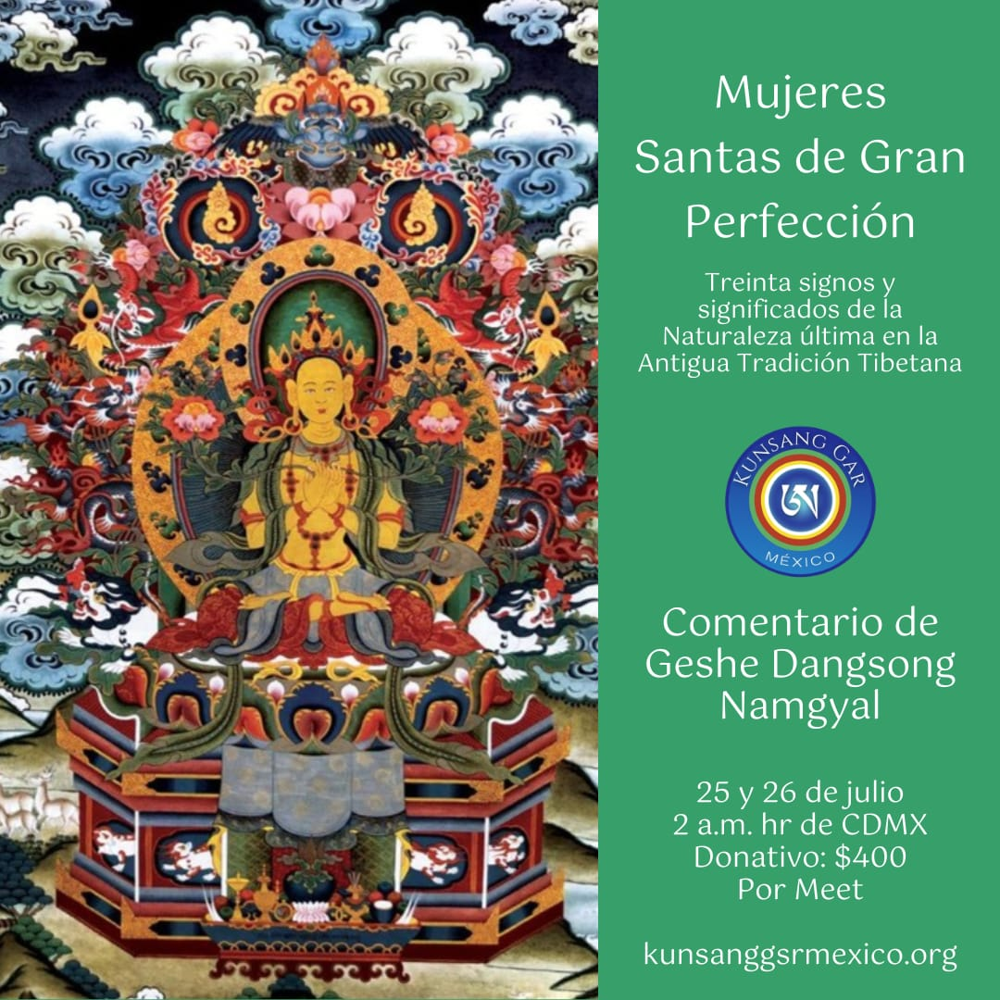

Mujeres Sagradas de la Gran Perfección
25 y 26 de julio de 2026 · Zoom · Inglés con traducción al español
Una plataforma digital para reunir programas graduales, eventos en vivo, biblioteca privada, comunidad y acompañamiento de Kunsang Gar México.
25 y 26 de julio de 2026 · Zoom · Inglés con traducción al español

Programas, sesiones en vivo, recursos privados y comunidad en una experiencia ordenada.
Programas organizados por nivel, tema y requisitos.
Sesiones en vivo, recordatorios y recursos para continuidad.
Comunidad nacional, eventos, donativos y área privada.

El programa activo de Kunsang Gar México reúne estudio, práctica, mudras y transmisión oral en un formato en línea con traducción al español.
Inscribirme ahora
Un camino para estudiantes que desean profundizar en la Gran Perfección con contexto, respeto por el linaje y continuidad de práctica.
Una ruta inicial para comprender postura, respiración, presencia y continuidad.
Comenzar rutaContexto, filosofía, historia viva y prácticas esenciales presentadas de forma gradual.
Explorar BönDzogchen, transmisión oral, rituales y enseñanzas con requisitos específicos.
Ver avanzadoEnseñanzas, prácticas mudras y transmisión oral lung del texto raíz Bonpo Dzogchen.
Learn More & Join
Filosofía, linaje y prácticas esenciales para entrar con claridad al camino.
Learn More
Sesiones periódicas para sostener continuidad con la comunidad nacional.
Register For FreeEnseñanzas, prácticas mudras y transmisión oral lung del texto raíz Bonpo Dzogchen Esencia del Corazón de la Khandro.
Este programa pertenece al camino avanzado y requiere asistir con respeto por el formato de transmisión oral.
Encuentros online y presenciales para recibir enseñanzas, practicar en comunidad y dar seguimiento a programas activos.
Maestro de la tradición Yungdrung Bön dedicado a transmitir estudio, práctica contemplativa y enseñanzas profundas con un lenguaje accesible para comunidades internacionales.
La plataforma puede sostener programas por etapas para estudiantes que desean profundizar, revisar materiales, asistir a sesiones en vivo y mantener un historial de práctica.
Ver programasLos donativos permiten que las enseñanzas, traducciones, becas y recursos digitales lleguen a más personas con orden y continuidad.
Donar ahora
Rutas organizadas por experiencia y requisitos.
Calendario, recordatorios y enlaces de acceso.
Videos, audios, PDFs y textos de apoyo.
Participación, guardados, constancias y seguimiento.
Grupos de práctica, actividades abiertas, sesiones periódicas y acompañamiento para sostener continuidad.
Datos demostrativosVideos introductorios para revisar contexto y vocabulario.
Audios para sesiones personales y grupos de práctica.
Materiales para preparar la asistencia a programas.
Videos breves para sostener estudio y práctica entre programas.
Ver ahoraGuías para comprender vocabulario, linaje y preparación.
LeerMateriales de apoyo para sesiones personales y grupos.
EscucharRespuestas claras para nuevos estudiantes y asistentes.
ConsultarLa plataforma contempla donativo único, donativo mensual, apoyo a eventos y becas para estudiantes.
Realizar donativoEsta demo muestra el flujo. Para Mujeres Sagradas usa los enlaces reales.